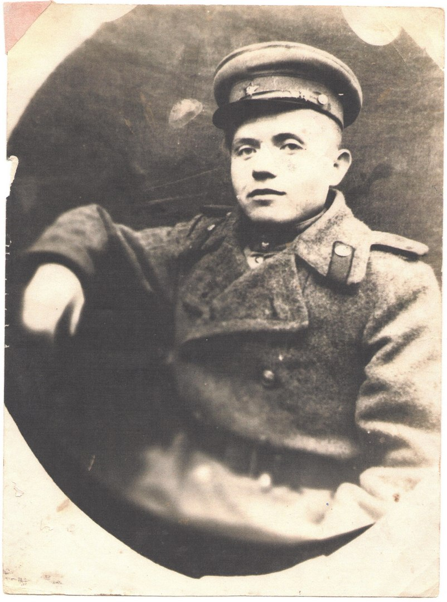
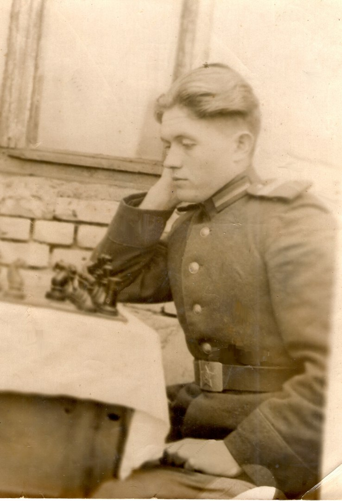

ШКОЛЬНЫЙ ПРОЕКТ
"Я участник акции "Бессмертный полк""
Сделал Боев Артём
Мой прадедушка: Золотарёв Павел Тимофеевич

Дата рождения: 29.06.1924
Дата смерти: 13.02.2017
Участник Великой Отечественной войны
Информация с сайта "Память народа":
Награждён:
Орден Отечественной войны II степени, Медаль «За отвагу», Медаль «За боевые заслуги», Медаль «За доблестный труд в ВОВ 1941—1945 гг.», знак "Фронтовик 1941-1945", медаль Жукова, медаль за освобождение республики Беларусь, медаль "За победу над Германией 1941-1945"
Родился в посёлке Медвенка Курской области в большой семье, имел старшего брата Григория, который воевал танкистом и погиб в 1944 году, и 3 сестер. Закончил Медвенскую среднюю школу.
Ушёл на фронт в 18 лет, был пулемётчиком в звании сержанта, воевал на Белорусском фронте в 4 Западном стрелковом полку, был командиром расчета в 130 гвардейском краснознаменном стрелковом полку. Имел 2 ранения.
После войны женился на Ходячих Марии Федотовне, прожил с ней до Золотой свадьбы, имели 2 дочерей, 4 внуков, 4 правнуков.
Умер в возрасте 92 лет в поселке Медвенка Курской области, там же похоронен.
 